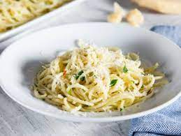

Death By Garlic

Description
With a name like that, you know this recipe is extra garlicky — it uses 10 cloves to be exact.
In addition to all that garlic, you'll find olive oil, crushed red pepper flakes, parsley, and Romano cheese in this dish.
Ingredients
Measurements for four people.
- ½ cup olive oil
- 10 cloves garlic, minced
- ½ teaspoon salt
- ½ teaspoon crushed red pepper flakes
- 3 tablespoons chopped fresh parsley
- 1 pound dry penne pasta
- ½ cup grated Romano cheese
Steps
- Cook pasta according to directions
- In a pan, brown garlic in oil. Add salt, pepper and parsley and remove from heat.
- Toss penne pasta with garlic mixture and Romano cheese and serve!
Back to the main page.